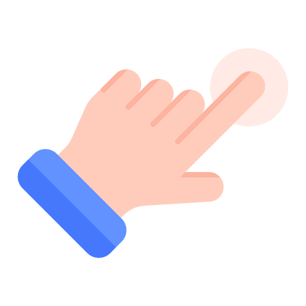
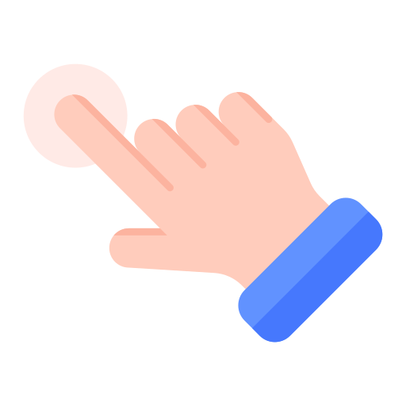

<ion-content *ngIf="isLoadingStep==0">
  <div class="logo">
    
  </div>
  <!--<h1 class="text" style="text-align: center;">Karkú</h1>-->
</ion-content>

<ion-content *ngIf="isLoadingStep==1">
  <div class="zoom-section">
    
    <div style="width: 100px;"></div>
    
  </div>
</ion-content>

<ion-content *ngIf="isLoadingStep==2" [scrollEvents]="false" class="test-touch" (touchstart)="onTouchStart($event)"
  (touchmove)="onTouchMove($event)" (touchend)="onTouchEnd($event)">
  <div class="elements" *ngFor="let element of visibleElements; index as i" [style.zIndex]="visibleElements.length - i">
    <div class="element-container" (click)="openModal(element)"
      [ngClass]="{'align-left': element.originalIndex % 2 === 0, 'align-right': element.originalIndex % 2 !== 0}">
      <div class="element" [style.transform]="'scale(' + setScala(element.zoomLevel) + ')'">
        
        <h1 style="color: white !important; font-weight: 400;" [innerHTML]="element.name">{{element.name}}</h1>
      </div>
    </div>
  </div>

  <ion-fab class="desktop" style="margin-left: 10%; margin-bottom: 2%;" horizontal="star" vertical="bottom">
    <ion-fab-button color="tertiary" (mousedown)="startPress('decrease')" (mouseup)="endPress()" style="width: 90px; height: 90px;">
      <ion-icon name="boat-outline" style="width: 40px; height: 40px;"></ion-icon>
    </ion-fab-button>
    <p>Retroceder</p>
  </ion-fab>

  <ion-fab class="desktop" style="margin-right: 10%; margin-bottom: 2%;" horizontal="end" vertical="bottom">
    <ion-fab-button color="tertiary" (mousedown)="startPress('increase')" (mouseup)="endPress()" style="width: 90px; height: 90px;">
      <ion-icon name="fish-outline" style="width: 40px; height: 40px;"></ion-icon>
    </ion-fab-button>
    <p>Avanzar</p>
  </ion-fab>
</ion-content>

<!--<ion-footer class="navigation-footer" *ngIf="isLoadingStep==2">
  <ion-toolbar class="toolbar">
    <ion-tabs class="toolbar-tabs">
      <ion-tab-bar slot="bottom" class="toolbar-tabs">
        <ion-tab-button (click)="decreaseZoomLevel(0.2)">
          <ion-icon name="boat-outline"></ion-icon>
          Retroceder
        </ion-tab-button>
        <ion-tab-button (click)="increaseZoomLevel(0.2)">
          <ion-icon name="fish-outline"></ion-icon>
          Avanzar
        </ion-tab-button>
      </ion-tab-bar>
    </ion-tabs>
  </ion-toolbar>
</ion-footer>-->